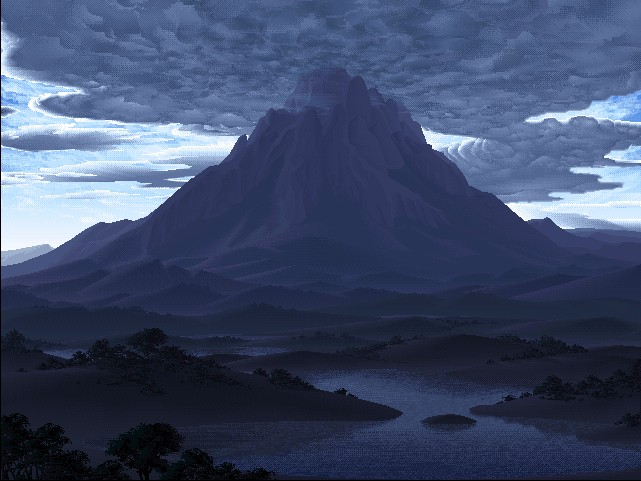
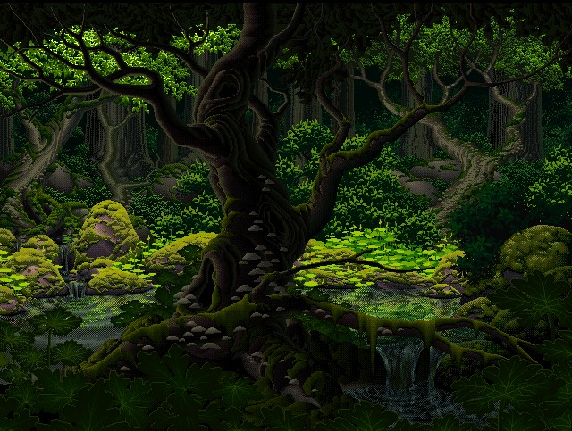
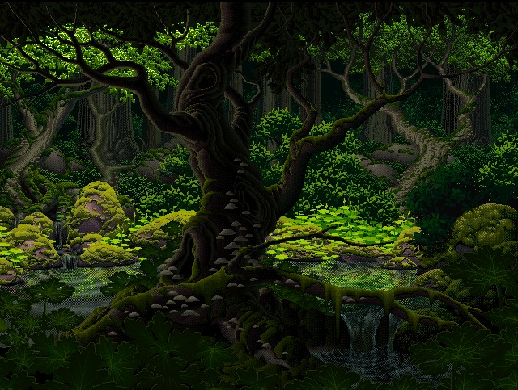

Vers la plage, vous trouverez surement des poissons pour vous nourir et si vous avez trop chaud, vous pourez vous rafraichir. Cependant, elle n'offre aucun abris, vous etes a la vue de tous et trouver de l'eau potable sera complique.


Vers la montagne, vous trouverez certains tresors rares. Cepedant, il faut tres froid et le blizzard rend la marche epuisante. Il n'est pas conseille de s'y aventurer sans une protection au froid.
 
